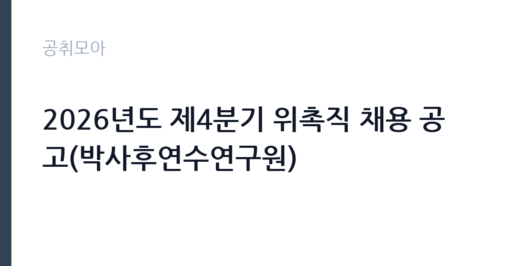

[공공기관] 2026년도 제4분기 위촉직 채용 공고(박사후연수연구원)
한국세라믹기술원 · 경기 · 마감 2026-10-29 (D-15) · 출처 잡알리오

한눈에 보는 모집 조건
| 기관 | 한국세라믹기술원 |
|---|---|
| 공고명 | 2026년도 제4분기 위촉직 채용 공고(박사후연수연구원) |
| 고용형태 | 기간제 |
| 근무지 | 경기 |
| 게시일 | 2026-10-15 |
| 마감일 | 2026-10-29 (D-15) |
지원자격, 이렇게 읽으세요
- 공공기관 채용공시
- 세부 조건은 원문 공고문 확인
지원자격은 기술원 인사규정 제7조의 결격사유에 해당하지 않고 임용 예정일에 즉시 근무가 가능한 자로, 박사후 과정의 성격상 박사학위 소지자를 대상으로 하는 것이 통상적입니다. 정확한 학위 요건과 전공 분야, 채용 분야별 자격과 가점 자격은 원문 공고문에서 반드시 확인하시기 바랍니다. 연구 실적(논문과 특허, 과제 참여)이 평가의 중심이 되므로 실적 목록을 충실히 정리하시기 바랍니다.
이 공고의 포인트
이 공고의 포인트는 정부출연연구기관에서 박사후 연수를 수행할 수 있다는 점입니다. 박사후연수연구원은 독립적인 연구 수행 경험을 쌓아 대학과 연구기관, 기업의 연구직으로 나아가는 징검다리가 됩니다. 세라믹기술원은 세라믹 분야 종합연구기관으로 소재 연구 인프라가 갖춰져 있어 연구 환경이 좋습니다. 같은 시기 위촉연구원과 정규직 연구직도 함께 모집되므로 본인 경력 단계에 맞는 트랙을 고르시기 바랍니다.
전형은 어떻게 진행되나
세부 전형 단계는 원문 공고문에서 확인하셔야 합니다. 박사후연수연구원 채용은 일반적으로 서류심사와 면접(연구 발표 포함)으로 진행되며, 연구 실적과 연구계획서 평가 비중이 높습니다. 분야별 자격과 가점 자격을 원문에서 대조하고 증빙을 빠짐없이 준비하시기 바랍니다. 임용 예정일은 최종합격자 선발 후 협의합니다.
원문에서 확인한 전형 방식
- 기술원 「인사 규정」 제7조(결격사유)에 해당하지 않는 자 - 임용 예정일에 즉시 근무가 가능한 자(임용 예정일은 최종합격자 선발 후 협의할 예정) - 채용 분야별 자격과 가점 자격은 공고문 참고
이런 분께 추천해요
- 세라믹과 소재 분야에서 연구 경력을 심화하고 싶은 박사학위 소지자
- 정부출연연구기관 연구 경험을 쌓아 다음 진로를 준비하는 분
- 경기 지역 연구거점 근무가 가능한 분
지원 전 체크리스트
- 박사학위와 전공 요건을 원문에서 확인했습니다
- 논문과 특허, 과제 참여 등 연구 실적 목록을 정리했습니다
- 연구계획서를 분야에 맞춰 준비했습니다
- 근무지와 임용 예정일을 원문에서 확인했습니다
모집 일정과 제출 타이밍
마감은 10월 29일로 같은 기관 제4분기 채용과 동일합니다. 연구 발표를 포함한 면접이 11월 초에 이어질 가능성이 크므로 발표 자료를 미리 준비하시기 바랍니다. 임용 예정일은 합격 후 협의이므로 기존 연구 과제 일정을 조정할 여유가 있습니다. 결과 발표는 채용 홈페이지를 통해 공지되는 경우가 많으니 수시로 확인하시기 바랍니다.
직무 이해하기: 공공기관
박사후연수연구원은배치 과제의 독립적인 연구 수행과 논문 작성, 실험 설계와 데이터 해석을 맡습니다. 한국세라믹기술원의 광전자와 에너지환경, 기계구조, 바이오, 나노융복합 소재 연구 중에서 본인 전공과 맞는 과제에 배치됩니다. 연수 기간 동안 연구 성과를 내는 것이 다음 진로의 핵심 자산이 되므로 과제 선택과 목표 설정이 중요합니다.
자기소개서 작성 팁
박사후연수연구원 지원서는 연구계획서가 핵심입니다. 지원 분야의 연구 동향을 짚고 본인의 박사 연구와의 연결, 연수 기간의 목표와 산출 계획을 구체적으로 쓰시기 바랍니다. 보유 장비 활용 능력과 협업 경험을 적어 즉시 기여 가능성을 보여주시기 바랍니다. 가점 자격이 있다면 증빙과 함께 명확히 기재하시기 바랍니다.
면접 준비 포인트
면접에서는 박사 연구 내용과 연수 연구계획을 묻는 경우가 많으며, 연구 발표가 포함될 수 있습니다. 본인 연구의 의의와 한계, 연수 기간에 해결할 문제를 10분 내외로 설명하는 연습을 해가시기 바랍니다. 지도교수 스타일이 아니라 독립 연구자로서의 관점을 보여주는 것이 중요합니다. 연수 조건과 기간에 대한 이해도 명확히 답하시기 바랍니다.
급여·근무조건 읽는 법
이 공고문에는 박사후연수연구원 보수 금액이 명시되어 있지 않으므로, 정확한 보수는 원문 공고문에서 확인하셔야 합니다. 공공기관 박사후연수연구원 보수는 통상 월 보수제로 운영되며 연수 수당 성격으로 책정되는 경우가 많습니다. 참고로 세라믹기술원 정규직의 대졸 초임은 약 3,183만원 수준으로 알려져 있으나(잡코리아 기업정보 기준, 공식 공시 아님), 연수 보수와는 별개이므로 혼동하지 마시기 바랍니다. 실수령액은 세전 보수에서 4대보험 본인부담금과 소득세를 제외한 금액이 됩니다.
자주 묻는 질문
- 누가 지원할 수 있나요?
박사후 과정의 성격상 박사학위 소지자를 대상으로 하는 것이 통상적이나, 정확한 학위와 전공 요건은 원문 공고문에서 반드시 확인하시기 바랍니다. - 위촉연구원과 무엇이 다른가요?
박사후연수연구원은 박사의 연구 심화를 위한 연수 성격이 강하고, 위촉연구원은 일반 계약직 연구 자리입니다. - 어디서 접수하나요?
한국세라믹기술원 채용 홈페이지(kicet.recruiter.co.kr)에서 접수하며 마감은 10월 29일입니다.
함께 보면 좋은 공고
[공공기관] 2026년 한국도로공사 교통량 조사 기간제 근로자(사무원) 채용공고 — 마감 2026-10-28[공공기관] 2026년도 제4분기 체험형 인턴 채용 공고(장애인 채용) — 마감 2026-10-29[공공기관] 2026년도 제4분기 체험형 인턴 채용 공고(인턴사무원) — 마감 2026-10-29출처: 잡알리오 공개정보를 바탕으로 공취모아가 정리한 안내글입니다. 모집 조건·일정은 변경될 수 있으니 지원 전 반드시 원문 공고문을 확인하세요. 본 글은 정보 제공용이며 합격을 보장하지 않습니다.